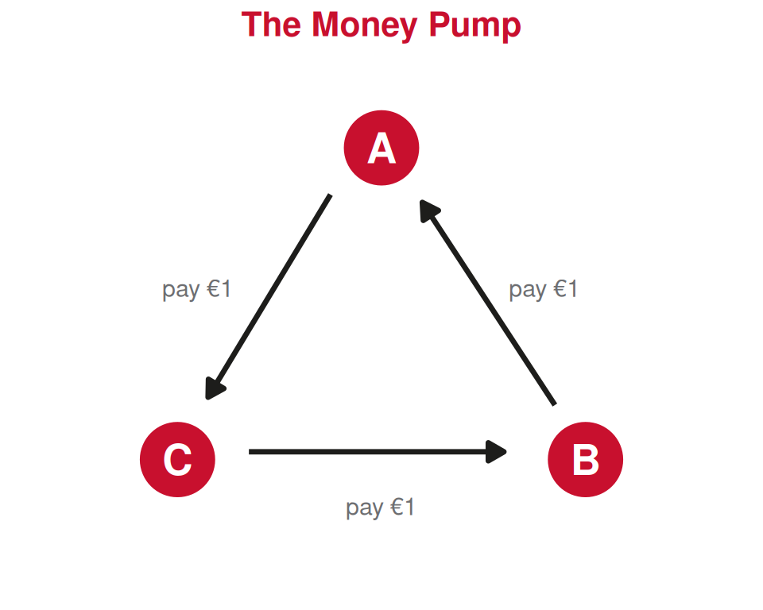
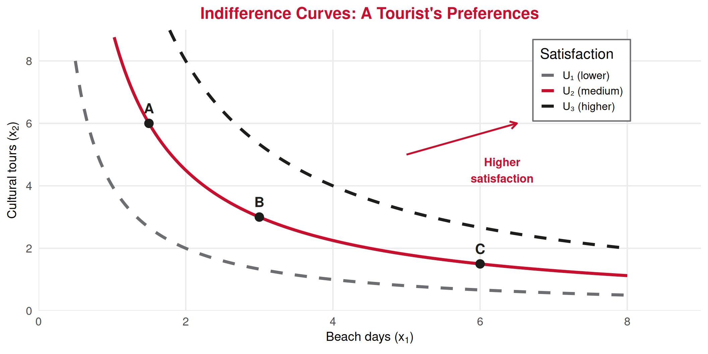
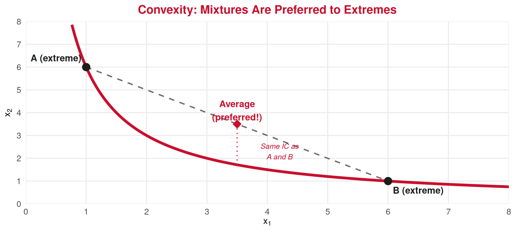
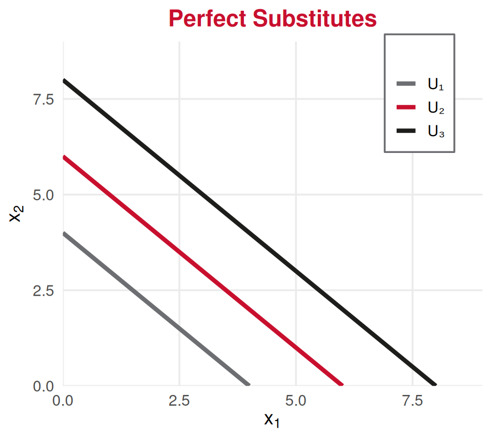

Consumer Theory
Lecture 6: Consumer Preferences and Axioms of Rationality
Paulo Fagandini
2026
Recap: Lecture 5 ⏪
Budget Set & Budget Constraint:
- Budget line: \(p_1 x_1 + p_2 x_2 = M\)
- Budget set: all affordable bundles (\(\leq M\))
- Slope \(= -p_1/p_2\): market rate of exchange
- Income changes ➡️ parallel shift; Price changes ➡️ pivot
We answered: What can the consumer afford?
Today: What does the consumer actually want? 🤔
The Consumer’s Full Problem 🧩
The consumer must solve two questions:
1️⃣ What is feasible?
✅ Budget constraint (Lecture 5)
The set of bundles you can buy.
2️⃣ What is desirable?
👉 Preferences (Today!)
How you rank bundles — which ones you like more.
💡 The optimal choice (Lecture 7) will be where these two meet: the best bundle you can afford.
What Are Preferences?
Bundles and Rankings 📦
A bundle (or basket) is a specific combination of goods:
\[\text{Bundle } A = (x_1^A, \; x_2^A)\]
Example: A tourist choosing between activities in Lisbon:
| Bundle | Meals (\(x_1\)) | Museums (\(x_2\)) |
|---|---|---|
| A | 3 | 4 |
| B | 5 | 2 |
| C | 3 | 4 |
Preferences describe how a consumer ranks these bundles — without needing prices or income!
Three Preference Relations ↔︎️
For any two bundles \(A\) and \(B\), the consumer can say:
Strictly Prefers ❤️
\[A \succ B\]
“I prefer \(A\) to \(B\)”
Example: 4 nights in the Algarve is better than 2 nights
Indifferent ⚖️
\[A \sim B\]
“\(A\) and \(B\) are equally good”
Example: 3 beach days + 2 city days is as good as 2 beach days + 3 city days
Weakly Prefers 👍
\[A \succsim B\]
“\(A\) is at least as good as \(B\)”
Combines the two: either prefers \(A\) or is indifferent
The Axioms of Rationality
Why Do We Need Axioms? 🏛️
People’s preferences can be anything — messy, emotional, contradictory.
Economists assume preferences satisfy certain axioms (basic rules) so that we can:
- Model consumer behavior mathematically
- Predict how choices change when prices or income change
- Build the concept of utility functions (Lecture 7)
👉 These axioms don’t say what people prefer — just that preferences are logically consistent.
Think of them as the “rules of the game” for rational choice.
Axiom 1: Completeness ✅
Completeness
For any two bundles \(A\) and \(B\), the consumer can always rank them:
\[A \succsim B \quad \text{or} \quad B \succsim A \quad \text{(or both, meaning } A \sim B\text{)}\]
In plain language: You are never “stuck” — you can always decide which bundle is at least as good.
✅ Satisfies completeness:
“I prefer a beach holiday to a city break”
❌ Violates completeness:
“I literally cannot compare a spa weekend to a ski trip — I have no opinion at all”
Axiom 2: Transitivity 🔗
Transitivity
If \(A \succsim B\) and \(B \succsim C\), then \(A \succsim C\)
In plain language: Rankings must be logically consistent — no cycles.
✅ Satisfies transitivity:
“I prefer Paris over Rome, and Rome over Berlin. So I prefer Paris over Berlin.”
❌ Violates transitivity:
“I prefer Paris over Rome, Rome over Berlin, but Berlin over Paris.”
😵 This is a preference cycle — it makes consistent choice impossible!
Why Transitivity Matters ⚠️
The “money pump” argument:
Imagine a tourist with intransitive preferences: \(A \succ B \succ C \succ A\)
- Tourist holds bundle \(C\)
- Offer to trade: \(C \to B\) for a small fee (€1) — accepts! (prefers \(B\))
- Offer: \(B \to A\) for €1 — accepts! (prefers \(A\))
- Offer: \(A \to C\) for €1 — accepts! (prefers \(C\))
- Back to \(C\)… but €3 poorer! 💸
Repeat forever ➡️ lose all money
Axiom 3: Monotonicity (“More is Better”) ⬆️
Monotonicity
If bundle \(A\) has at least as much of every good as \(B\), and strictly more of at least one good, then \(A \succ B\).
In plain language: More of a good thing is always preferred, all else equal.
✅ Example:
\((4 \text{ meals}, 3 \text{ museums}) \succ (3 \text{ meals}, 3 \text{ museums})\)
Same museums, one extra meal ➡️ strictly better
💡 Implication:
This rules out “bads” (things you’d rather have less of, like pollution)
For this course, we assume all goods are desirable.
Indifference Curves
What Is an Indifference Curve? 〰️
Indifference Curve
The set of all bundles that give the consumer the same level of satisfaction.
Along an indifference curve: \(A \sim B\) for all points \(A, B\) on the curve.
Tourism intuition:
A tourist might be equally happy with:
- 5 beach days + 1 cultural tour
- 3 beach days + 3 cultural tours
- 1 beach day + 6 cultural tours
All on the same indifference curve!
👉 The consumer is indifferent between any two points on the same curve.
Moving to a higher curve = better (by monotonicity).
Moving to a lower curve = worse.
Drawing Indifference Curves 🎨
Points \(A\), \(B\), \(C\) are on the same curve (\(U_2\)): the tourist is indifferent among them.
Properties of Indifference Curves
The axioms imply four key properties:
1️⃣ Higher curves are preferred
(monotonicity: more is better)
2️⃣ Downward sloping
(to stay indifferent, getting more of one good requires giving up some of the other)
3️⃣ Cannot cross
(would violate transitivity — we’ll prove this next!)
4️⃣ Exactly one curve through every point
(completeness: every bundle belongs to some indifference level)
Why Can’t Indifference Curves Cross? ❌
Proof by contradiction (using the axioms):

- \(X\) and \(Y\) are on \(IC_1\) ➡️ \(X \sim Y\)
- \(X\) and \(Z\) are on \(IC_2\) ➡️ \(X \sim Z\)
- By transitivity: \(Y \sim Z\)
- But \(Y = (2, 4)\) has more of \(x_2\) than \(Z = (2, 3.5)\) (same \(x_1\)) ➡️ monotonicity says \(Y \succ Z\) 💥 Contradiction!
Axiom 4: Convexity
Convexity
Averages (mixtures) of bundles are at least as good as extremes.
If \(A \sim B\), then any weighted average \(\lambda A + (1-\lambda) B\) is weakly preferred (\(\succsim A\)), where \(0 < \lambda < 1\).
Intuition: People prefer balanced consumption to extremes.
A tourist equally happy with:
- 7 beach days + 0 museums
- 0 beach days + 7 museums
Would prefer 3.5 beach + 3.5 museums!
Graphically: Indifference curves are bowed toward the origin (convex shape).
👉 This will give us a diminishing Marginal Rate of Substitution (Lecture 7)
Convexity: Graphical Intuition 📉
The average of \(A\) and \(B\) lies above the indifference curve ➡️ it is on a higher curve ➡️ preferred!
Summary of the Four Axioms
| Axiom | Statement | Intuition |
|---|---|---|
| Completeness | Can always compare any two bundles | No indecision paralysis |
| Transitivity | If \(A \succsim B\) and \(B \succsim C\), then \(A \succsim C\) | No preference cycles |
| Monotonicity | More of a good is better | Goods are desirable |
| Convexity | Mixtures preferred to extremes | Variety is valued |
👉 If these hold, preferences can be represented by a utility function \(U(x_1, x_2)\) — that’s Lecture 7!
👉 The utility function assigns a number to each bundle so that higher numbers = preferred bundles.
Special Cases
Special Case 1: Perfect Substitutes ↔︎️
Definition: Consumer is willing to trade goods at a constant rate.
Indifference curves are straight lines.
Tourism example: A tourist is indifferent between a €10 lunch voucher and €10 cash — they substitute perfectly at a 1:1 rate.

💡 No convexity here — the consumer doesn’t care about “balance.”
Special Case 2: Perfect Complements 🧩
Definition: Goods are always consumed in fixed proportions.
Indifference curves are L-shaped (right angles).
Tourism example: A ski pass and ski rental — having 3 ski passes and 1 ski rental is no better than having 1 of each (you need both to ski!).

💡 More of one good without the other gives no extra satisfaction.
The “Normal” Case 👍
Most goods lie between the two extremes:
| Type | IC Shape | Substitutability | Example |
|---|---|---|---|
| Perfect Substitutes | Straight line | Complete | €10 cash vs €10 voucher |
| Normal goods | Smooth convex curve | Partial | Beach days vs cultural tours |
| Perfect Complements | L-shape | None | Ski pass + ski rental |
👉 For the rest of this course, unless stated otherwise, we assume the normal case: smooth, convex, downward-sloping indifference curves.
This is where convexity applies — consumers value variety and are willing to trade goods, but at a changing rate. That changing rate will be the MRS in Lecture 7!
Tourism Application
Tourism: Revealed Preferences ✈️
How do we know tourist preferences in practice?
We can’t read minds — but we can observe choices!
Revealed preference logic:
If a tourist could afford both packages A and B, but chose A, then:
\[A \succsim B\]
Their choice reveals their preference!
Tourism industry applications:
- 💻 Booking data reveals preferences for destinations, hotel stars, trip lengths
- 📊 A/B testing on travel websites reveals what tourists click on
- ✈️ Airline loyalty programs track revealed choices over time
💡 This is why tourism companies collect so much data — they’re mapping your indifference curves!
Summary: Today’s Key Takeaways
Today’s Lecture:
- Preferences rank bundles — independently of prices or income
- Four axioms make preferences “rational” and modelable:
- Completeness: always able to compare
- Transitivity: no preference cycles
- Monotonicity: more is better
- Convexity: mixtures preferred to extremes
- Indifference curves: connect bundles giving equal satisfaction
- IC properties: downward-sloping, don’t cross, higher = better, convex
- Special cases: perfect substitutes (lines) and perfect complements (L-shapes)
Connection to Lecture 5: Budget constraint shows what’s feasible; preferences show what’s desirable.
Next (Lecture 7): The Marginal Rate of Substitution (the slope of the IC) and utility functions — how we turn preferences into math and find the optimal choice!
Exercises
Application Time! ✏️
Preferences, axioms, and indifference curves.
Exercise 1: Multiple Choice
Question: A tourist says: “I prefer an Algarve beach holiday to a Douro wine tour, I prefer a Douro wine tour to a Lisbon city break, and I prefer a Lisbon city break to an Algarve beach holiday.” This violates:
A. Completeness
B. Transitivity
C. Monotonicity
D. Convexity
Answer: B
This is a preference cycle: Algarve \(\succ\) Douro \(\succ\) Lisbon \(\succ\) Algarve. Transitivity requires that if Algarve \(\succ\) Douro and Douro \(\succ\) Lisbon, then Algarve \(\succ\) Lisbon — but the tourist says the opposite. This violates transitivity and makes the tourist vulnerable to a “money pump.”
Exercise 2: Multiple Choice
Question: Indifference curves that are L-shaped represent goods that are:
A. Perfect substitutes
B. Normal goods with convex preferences
C. “Bads” (undesirable)
D. Perfect complements
Answer: D
L-shaped indifference curves indicate perfect complements — goods consumed in fixed proportions. Extra units of one good without the other provide no additional satisfaction (e.g., a left shoe without a right shoe, or a flight ticket without a hotel booking in a package deal).
Exercise 3: Open Question
Scenario: Consider a tourist choosing between two types of vacation days: 🌞 Beach days (\(x_1\)) and 🏛️ City sightseeing days (\(x_2\)). Assume preferences satisfy all four axioms.
Questions:
The tourist is indifferent between bundle \(A = (2, 6)\) and bundle \(B = (6, 2)\). Draw an indifference curve through both points (sketch it with the typical convex shape). Label it \(U_1\).
Consider bundle \(D = (4, 4)\). Using the axiom of convexity, explain why \(D\) is preferred to \(A\) (or \(B\)). Show \(D\) on your graph — is it above, on, or below \(U_1\)?
Now consider bundle \(E = (1, 5)\). Can you definitively say whether \(E\) is better or worse than \(A\) without more information? Why or why not?
The tourist says: “I prefer bundle \(F = (3, 3)\) to \(A\), but I also prefer \(A\) to \(G = (5, 5)\).” Does this violate any axiom? Which one and why?
Suppose these are perfect substitutes (1 beach day = 1 sightseeing day). Redraw the indifference curve through \(A\) and \(B\). What is different about its shape?
Exercise 3: Solution — Parts a & b
a) The indifference curve through \(A = (2, 6)\) and \(B = (6, 2)\) is a smooth, downward-sloping, convex curve (bowed toward the origin). All points along this curve give the same satisfaction level \(U_1\).
b) Bundle \(D = (4, 4)\) is the average of \(A\) and \(B\):
\[D = \frac{1}{2} A + \frac{1}{2} B = \left(\frac{2+6}{2}, \frac{6+2}{2}\right) = (4, 4)\]
By the convexity axiom: if \(A \sim B\), then any mixture is weakly preferred.
So \(D \succsim A \sim B\).
Since \(D\) is on the straight line connecting \(A\) and \(B\), and the indifference curve is convex (bowed below this line), \(D\) lies above \(U_1\) ➡️ \(D\) is on a higher indifference curve ➡️ \(D \succ A\).
Exercise 3: Solution — Parts c, d, e
c) Bundle \(E = (1, 5)\) vs \(A = (2, 6)\): \(E\) has less of \(x_1\) (1 < 2) and less of \(x_2\) (5 < 6).
By monotonicity: \(A \succ E\). Yes, we can say \(E\) is worse — \(A\) dominates \(E\) in both goods.
d) The tourist says \(F = (3,3) \succ A\) and \(A \succ G = (5,5)\).
This violates monotonicity: \(G = (5,5)\) has strictly more of both goods than \(F = (3,3)\), so monotonicity requires \(G \succ F\). Combined with \(F \succ A \succ G\), by transitivity we’d need \(F \succ G\). But \(G\) dominates \(F\) — contradiction!
The statement violates monotonicity (and by extension creates a transitivity conflict with monotonicity).
e) If perfect substitutes at 1:1, the indifference curve through \(A = (2,6)\) and \(B = (6,2)\) is a straight line with slope \(-1\): \(x_1 + x_2 = 8\). All bundles summing to 8 give equal satisfaction. The curve is linear, not convex — no preference for variety.
Next Lecture
February 26, 2026: Marginal Rate of Substitution, Utility Functions & Utility Maximization
We now know what’s feasible (budget) and what’s desirable (preferences).
Next: How to find the best affordable bundle! 🎯
Thank You!
Questions? 🙋
📧 paulo.fagandini@ext.universidadeeuropeia.pt
Next class: Thursday, February 26, 2026

Economics of Tourism | Lecture 6